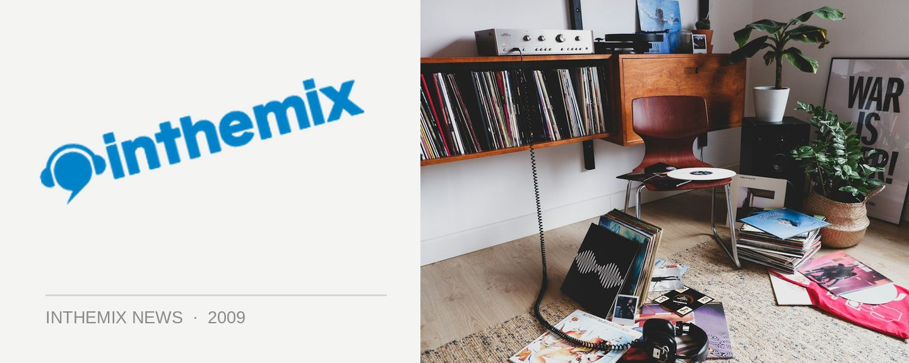

Want to work for Sound Alliance?
Are you glued to the internet all day long and interested in kick starting your career in the music industry? inthemix’s parent company The Sound Alliance may have the job for you.
We are currently seeking two Advertising Account Managers to join our Surry Hills based team. One role is suitable for an experienced campaigner with sales and agency experience, and the other role will suit a music enthusiast keen to get their foot in the door and work with ITM’s sibling music sites FasterLouder and Mess + Noise.
Advertising Account Manager – FasterLouder, Mess + Noise
This is a unique opportunity to work in an environment that includes the fun and excitement of the music industry with the fast-paced dynamism of online media. We’re looking for a self motivated, team player with a driving passion for music and an excellent track record in sales. Selling online advertising across FasterLouder, Mess + Noise and an exciting new music property that we’re about to announce, you will be offering a unique proposition to music industry advertisers who are looking to reach our audience.
Experience in sales, whilst looked upon favorably, is not essential, although you must be an avid user of the internet to stay connected and discover new music and bands. Above everything, your sheer determination and desire to succeed in the music industry will be the strongest attribute you bring to this role.
Senior Advertising Account Manager – Sound Alliance
You will have at least 2-4 years of experience in online media sales with a good understanding of the fast-evolving online media environment. You will have extensive, high level contacts within advertising agencies, media buyers and direct clients. You will be a creative thinker with entrepreneurial flair and demonstrated experience in writing proposals, presentations and negotiation. You will thrive on challenging the norm, breaking new ground and offering your clients truly unique solutions.
You’re kicking serious goals in your current role and wondering why the hell you’d make a change in these uncertain economic times. This is why… This newly created role offers the rare opportunity of working alongside our Sales Director on key existing agency relationships and will soon have full accountability for this already buoyant patch. The rewards include uncapped commission and an amazing product to sell; the Sound Alliance network of sites continues to experience unprecedented growth.
For more info on The Sound Alliance head here.
To apply, send your CV and an application letter to jobs@thesoundalliance.net by July 13.